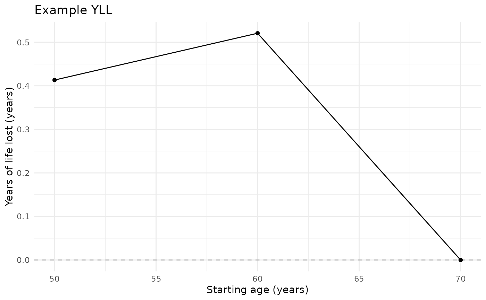

Plot years of life lost across starting ages
Value
A ggplot object, editable with + labs() and + theme() and
saveable with ggplot2::ggsave().
Examples
if (requireNamespace("ggplot2", quietly = TRUE)) {
data(yll_toy)
result <- estimate_yll(
yll_toy[1:500, ], time_var = "period", event_var = "event",
exposure_var = "hypertension", reference_level = "No", exposed_level = "Yes",
age_at_entry_var = "age", target_population = "all",
age_start = 50, age_end = 70, age_interval = 10, B = 0, use_future = FALSE
)
plot_yll(result) + ggplot2::labs(title = "Example YLL")
}
